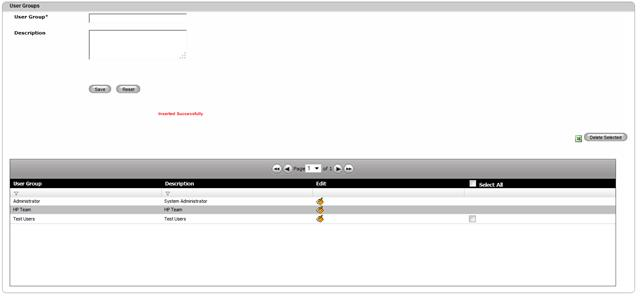

To view a Group,
1. Navigate User Administration>> Group on the DCTrackMobileWeb menu bar.
You will see the Group Screen with a listing of all created user groups with corresponding descriptions.

Figure 164: Group Screen – View Group details
2. Click page number hyperlink, if applicable to view the list in another page(s).
|
Copyright © 2019 Hewlett
Packard Enterprise,v5.2.
|